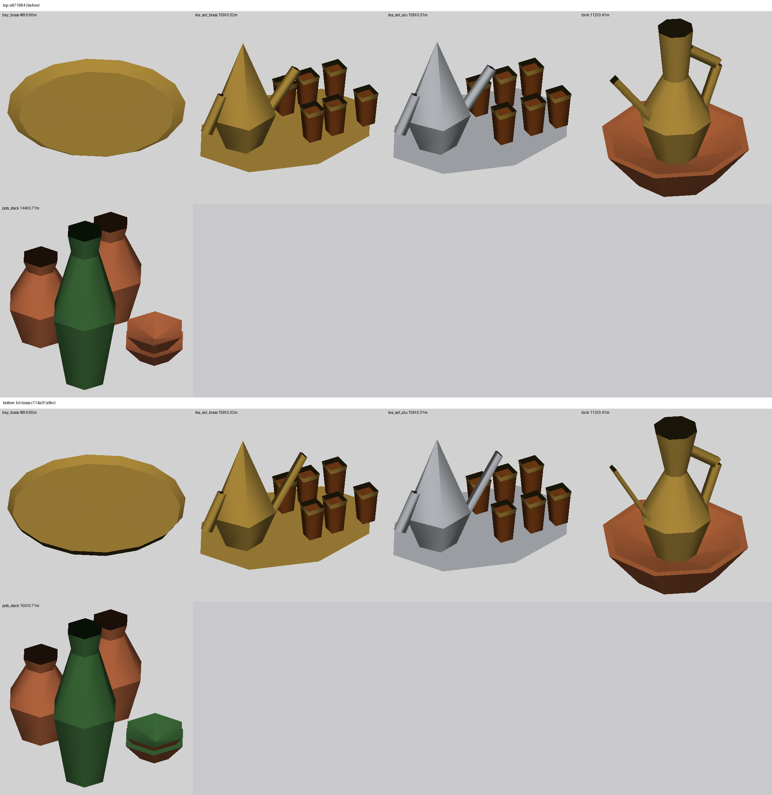
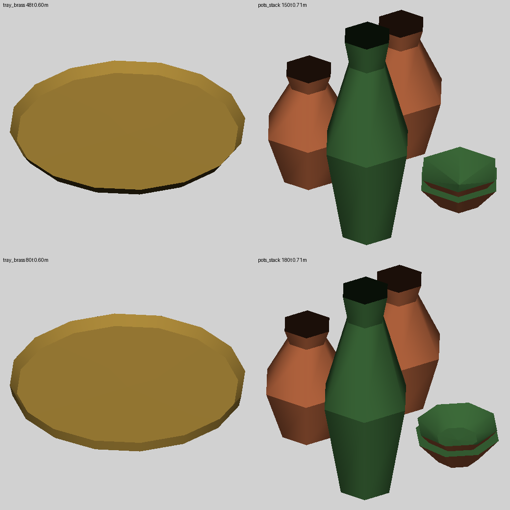
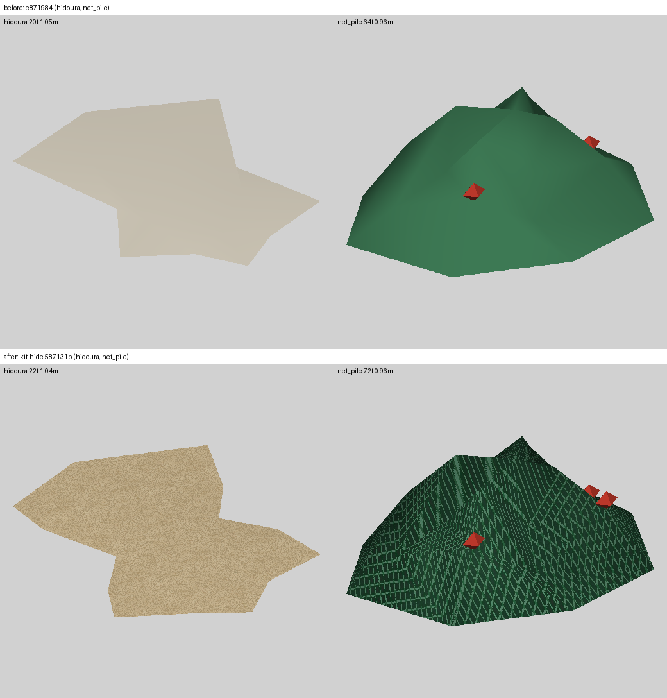
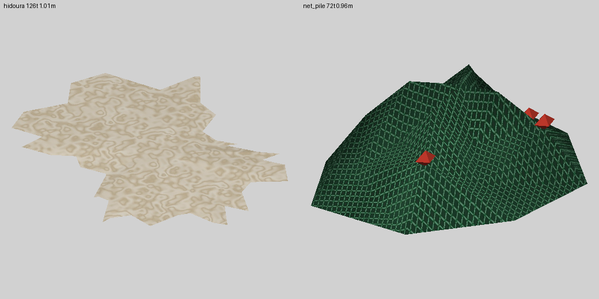
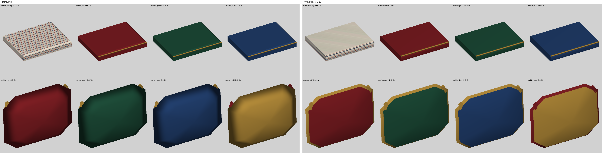
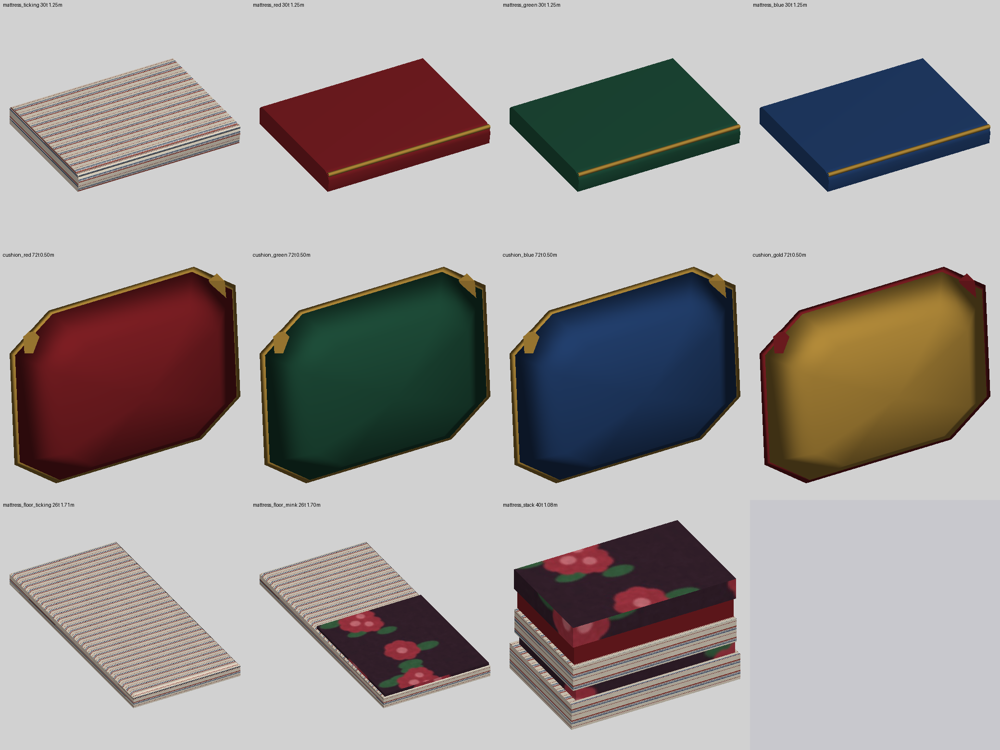
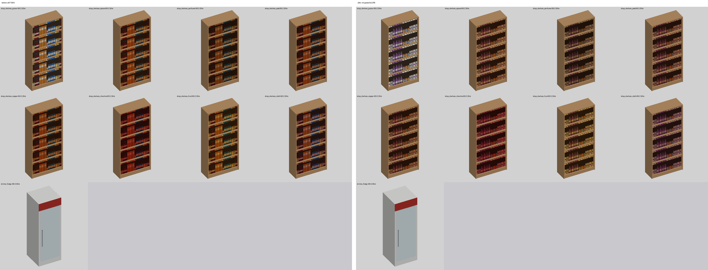
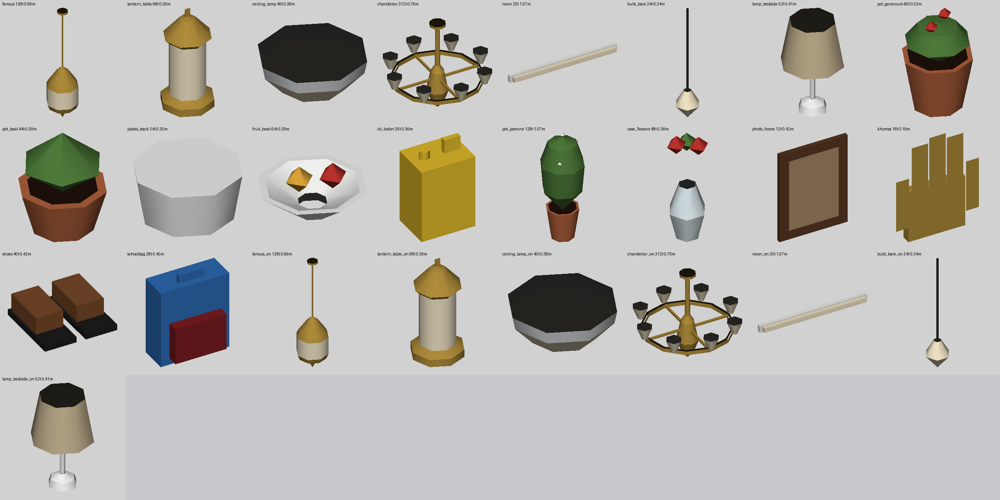

Every picture in docs/wip/*.png of every wip/* branch, one under another,
with the first two paragraphs of its notes (docs/wip/<picture>.md on that branch).
Each shot-* sheet comes before its fix-* sheet. Click a picture to open it full size.
shot-brass (3 November, z-buffer sheet docs/wip/shot-brass.png: top e871984, bottom kit-brass c114a3f): better: the ibrik's flared mouth and long tapering spout and both tea pots' long rising spout give the right silhouettes, and the pots_stack bowls now show a green glazed hollow and a glazed rim ring instead of one terracotta lump (though at 6 sides the hollow still reads like a peaked lid; 8 sides or a lighter inner glaze would read as open). worse: tray_brass's new rim (0.018 m in over 0.026 m up, about 55 degrees) is steeper than a standing view of a low table (about 33 degrees), so its near side is seen from behind (the black sliver in the sheet) and brass is single-sided, so in a viewer the near rim would vanish; fix by giving the rim an outer skin (lathe it back down to (r, 0)) or by going back to about 0.03 m in.
The same picture is also on: wip/fix-brass.

fix-brass (3 November; sheet docs/wip/fix-brass.png: top shot-brass b376aed, bottom this branch, the 33 degree standing view of hg_render.py): better: tray_brass keeps its crisp 0.018 m rim and gains an outer skin lathed from the lip down to (r - 0.006, 0), so the near rim now shows brass instead of the black back-face sliver (80 tris, was 48; checked: the skin faces out, the inner rim up and in); the pots_stack upper bowl has 8 sides and a flat-bottomed hollow (a ring at half radius) and now reads as an open bowl, not a peaked lid (180 tris, was 150). worse or left: the bowls are still flat-shaded facets and the inner glaze is the same green as the outside rim ring, so a lighter inner glaze would read better still; not checked in the 3D viewer or Blender; the quick build finishes (9.6 s). pytest -q -k "kit or home or furn": 14 passed.

shot-hide (3 November, z-buffer sheet docs/wip/shot-hide.png, top e871984, bottom kit-hide 587131b): better: net_pile now reads as a dark green net with light diamond cords and a third visible red float instead of a smooth green blob, and hidoura has a textured warm tan face instead of a flat grey-beige plate. Worse / to fix: hidoura still looks flat with straight polygon edges (no visible tufts or dome from this view) and the fleece image reads as sand or sandpaper, not wool locks (make the locks larger and lighter cream, push the edge points in and out more, raise the dome); on net_pile the mesh is stretched into long slanted strips and changes direction at every crease (map the UVs by world position or one projection so the diamonds stay square and continuous).
The same picture is also on: wip/fix-hide.

fix-hide (3 November, sheet docs/wip/fix-hide.png): net_pile now uses one top-down UV projection (x, -y) over the whole pile, and on the sheet the diamonds are square and run on unbroken across every crease (better); hidoura now has two wool locks (one out, one in) along every outline edge, so its edge is ragged with tufts and no long straight sides, a soft shoulder ring under the crown (126 triangles), and a lighter cream fleece with larger locks (locks 10, crimp 3, 0.4 m tile) that no longer reads as sand. Left / doubt: the legs and neck read less clearly now that every edge is ragged (the outline is a bit star-like); the dome cannot show because a rug must stay under 2 cm (tests/test_homekit.py), so only shading hints at it; the fleece blobs still look more mottled than curly; not yet looked at in the 3D view.

shot-textile (3 November): z-buffer sheet shot-textile.png, e871984 on the left, kit-textile (a646d52) on the right; doukkana mattresses (4) and cushions (4)
Worse on the whole: the ticking mattress's top lost its stripes (a pale wash with faint diagonal streaks, so the top's UVs are stretched along the swept profile; fix the top's u/v so the stripes run across as before), and the rounded front, belly and piping read the same as the old box from the kit view; the cushion's piping is a wide flat gold (red on the gold one) picture frame and its face now shades flat, so it looks less plump than the old domed one. Better: longer corner tassels show; to fix, make the cushion's band a thin round cord (about 1 cm, its own normals), keep the face's smooth dome normals across the seam, then re-render before merging.
The same picture is also on: wip/fix-textile.

fix-textile (WIP, 3 November): sheet fix-textile.png (mattresses and cushions, kit as now)
Better: the ticking mattress's top shows its stripes again (the swept cover has its own UVs: u along the bench, v down the profile, equal to y on the top as on the old flat pad), and the cushion is one smooth domed cover over the seam with a thin round gold cord (red on the gold one, about 1 cm, its own normals) instead of the wide flat frame; pytest -q -k "kit or home or furn" passes (14). Doubt: the cushion now costs 72 triangles (was 40; TABLE budget raised, the cord is 32 of them) and its outline still shows the 8 corners of its superellipse; the rounded mattress front still reads like the old box from the kit view; not yet seen in a room render.

shot-goods (3 November): docs/wip/shot-goods.png is the hg_render.py z-buffer sheet of the nine pieces that use the goods texture (eight shop_shelves_* and drinks_fridge), e871984 on the left, kit-goods 9e22ff5 on the right (half size; close-ups showed the same). Better: the product shapes read more clearly (bottles with necks, labelled tins, cartons) and the grocer has its own white and purple colours. Worse: the goods are shorter, so each bay is about half empty dark gap above them; every row repeats the identical facing; the seven themed shelves are still the same grocery shapes under one tint (as before, now browner); the drinks fridge looks unchanged (its door hides the goods). To fix: fill the bay height (taller goods or two stacked rows), vary the facing per row, and give pots, copper, cloth and chechia their own shapes.

shot-55: contact sheet of the 18 life pieces (kit_life.py) and the 7 light _on twins
Picture: docs/wip/shot-55.png (scratchpad hg_render.py, seed 42, z-buffer, view from above and in front; back faces are drawn dark). No code changed.
